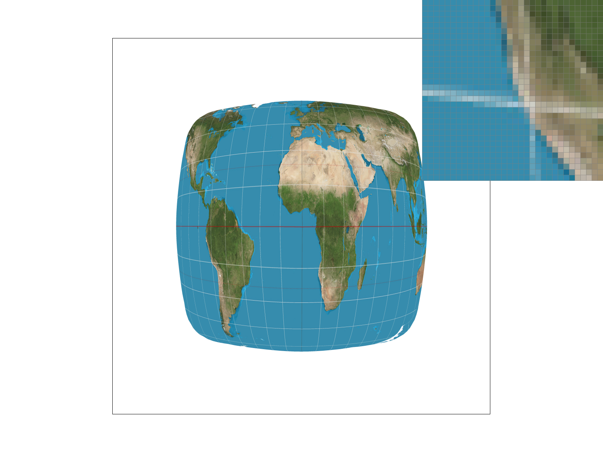
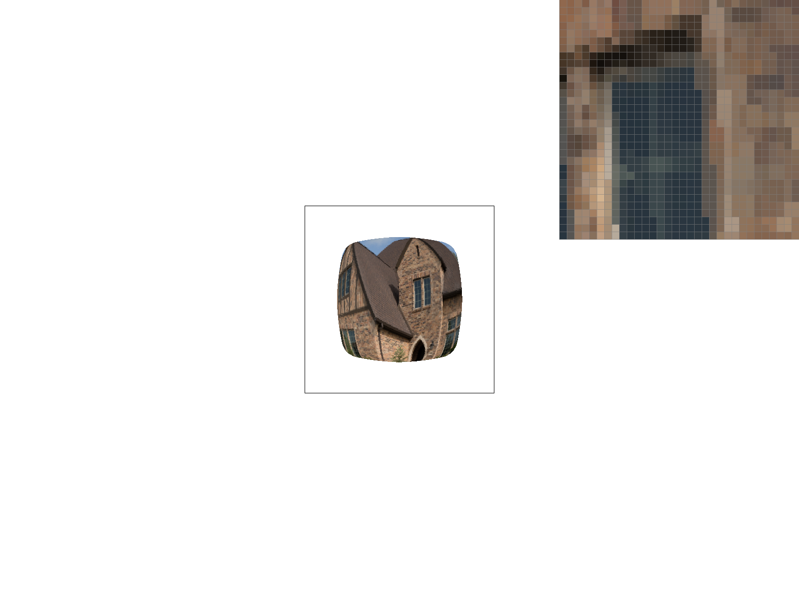
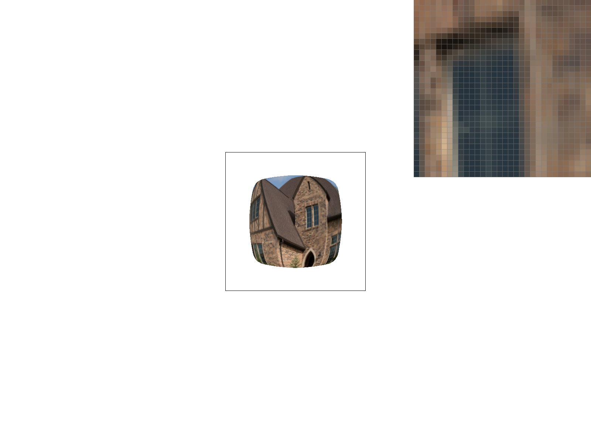

CS184/284A Fall 2026 Homework 1 Write-Up
Link to webpage: https://cal-cs184-student.github.io/hw1-iloveihouse-writeup
Link to GitHub repository: https://github.com/cal-cs184-student/hw1-iloveihouse
Overview
In this homework we built a simple rasterizer. Task 1 and Task2 implements a basic triangle rasterization and supersampling for antialiasing. Task3 asks for three matrix operations for transformation. Task4 asks for implementation for interpolation of barycentric coordinates. Task 5 and 6 askes us to implement texture mapping. From this homework, we learned how to implement a basic rasterization pipeline, and be aware of small edge cases that can end up into wrong rendering results.
Task 1: Drawing Single-Color Triangles
To rasterize triangles, first we take the min and max of the three vertices x and y coordinates to get the bounding box of the triangle. Then we loop over every pixel in that box , test the center by sampling the point location\((x + 0.5,\; y + 0.5)\). For the evaluation of the sample point, we use the three line equations: for each edge \((P_i, P_{i+1})\).
On which side of the point lies comparative to the edge depends on the sign of \(L_i\). If all three values are the same positive or negative, the point is inside the triangle. If the point is inside the triangle, we write the color into the sample buffer. We put a small epsilon for the points that sit exactly on an edge from being dropped.
The two requested images are shown below:


Why it is no worse than the bounding-box algorithm. The algorithm we used is the bounding-box algorithm.
Task 2: Antialiasing by Supersampling
Algorithm of supersampling and code implementations
While task 1 took only one sample per pixel, we use supersampling to take more samples per pixel. We use the sample_rate parameter to decide how much we want to supersample. For a sample rate of N, each pixel is split into a \(\sqrt{N} \times \sqrt{N}\) grid of sub-pixels. The sample_buffer vector stores one color for each sub-pixel, and the resolve_to_framebuffer function averages the colors of all sub-pixels in a pixel to produce the final color for that pixel. The final image is stored in the framebuffer vector, which is then written to a PNG file.
In rasterize_triangle we keep the same bounding box and the same three line tests from Task 1. There are two modifications in the pipeline: (1) For each pixel in the box we now loop over the \(\sqrt{N} \times \sqrt{N}\) sub-pixels for supersampling. (2) After all shapes are drawn, we put the resolve_to_framebuffer to turn the sample buffer into the final image. For each pixels, color is averaged over all grides and therefore get the blurred results.
Results. Below is basic/test4.svg at sample rates 1, 4, and 16.


From comparing side by side, we could inspect that the edges with high frequencies become blurry as the sample rate increases, overall removing jaggies that exist from lower sample rate. The higher it had, the more blury the edges look.
Task 3: Transforms
For task3, we wrote down three transformation functions : translate, scale, and rotate. With these three functions, we could successfully render a basic robot given. In addition, we also created a new pose of a robot in the gym doing biceps and a squat on the same time. We changed in the svg file to add rotate function in order for the robot to make a nice pose that looks like a weightlifter. The results is shown below:


Task 4: Barycentric coordinates
Barycentric coordinates are three weights, one per triangle vertex. We use barycentric formula using an area/edge function form (for alpha, beta, gamma = 1-alpha-beta) to interpolate the color by weighting the three vertex colors. In our implementation, we go over using the algorithm from task 1,2 to check if the pixel is inside the triangle, and then color it with barycentric coordinates if so. To show this, here is a single triangle filled in pixel by pixel using its barycentric weights as colors. (We used svg of triangle from subdiv/triangle1.svg) Each corners are assigned with color of red, green, blue and the colors inside are interpolated by barycentric coordinates.

svg/basic/test7.svg with default viewing parameters and sample_rate =1. Here, note that when the barycentric denominator were extremly small due to fp issues, the interpolation becomes unstable resulting into white spaces observable. We simply added a small eps term in the barycentric denominator to overcome it.

Task 5: "Pixel sampling" for texture mapping
Pixel sampling is how we pick a color from the texture for each sample. Each vertex of a textured triangle has a uv coordinate that points into the texture. For each sample inside the triangle we use barycentric coordinates from Task 4 to interpolate the uv and then call tex.sample. Nearest sampling returns the one texel that contains the uv point. Bilinear sampling blends the four texels around the point based on how close it is to each one. So nearest looks blocky and bilinear looks smooth.
We tested this on svg/texmap/test1.svg and zoomed in on the thin grid lines of the map where the difference is easy to see.

At 1 sample per pixel nearest sampling breaks the grid lines into dashes because each pixel either hits the thin line or misses it. Bilinear keeps the lines continuous since nearby pixels still get some of the line's color. At 16 samples per pixel both look similar because the extra samples already average the colors. The two methods differ the most when the texture is magnified and one texel covers many pixels. Nearest repeats the same texel over a whole block of pixels so it looks blocky while bilinear blends between neighboring texels and stays smooth.
Task 6: "Level Sampling" with mipmaps for texture mapping
When a textured triangle is small on the screen one pixel can cover a lot of texels. If we only grab one of them we miss most of the texture and the result looks noisy. Thus, we use level sampling which fixes this with a mipmap that uses a stack of smaller copies of the texture, where each level is half the size of the one before. For each sample we pick the level where one texel is about the size of one pixel.
In order to find the right level we also compute the uv one pixel to the right and one pixel down from the sample point in rasterize_textured_triangle. Then in get_level we check how far the uv moves in texels for each of those steps and take the bigger one as \(L\). The level is \(D = \log_2 L\). L_ZERO always uses level 0 like Task 5. L_NEAREST rounds \(D\) to the closest level. L_LINEAR blends the two levels around \(D\).
Bilinear sampling is a bit slower than nearest since it reads 4 texels instead of 1. It doesn't need any extra memory though. It makes magnified textures look smoother but doesn't really help when the texture is shrunk down. Mipmaps take about 1/3 more memory and a little more work per sample. However, they are good at getting rid of aliasing on shrunk textures, but it gets a bit blurry. L_LINEAR looks smoother than L_NEAREST but reads twice as many texels. Supersampling fixes the most since it also smooths out triangle edges. It is also the slowest and uses the most memory because everything grows with the sample rate.
For our texture we just used a random photo of a brick house, saved as img/my_texture.png. We zoomed out so the texture gets shrunk down and kept 1 sample per pixel. The zoom box in the corner is on the bricks next to a window.
{kind=link}
{kind=link}
{kind=link}

{kind=link}

With L_ZERO the bricks turn into noisy speckles because each pixel only picks one texel out of many. Switching to P_LINEAR barely helps. With L_NEAREST most of the noise goes away since the colors come from an averaged level. It gets a bit blurrier though and the thin window bars fade out. L_NEAREST with P_LINEAR looks the smoothest.